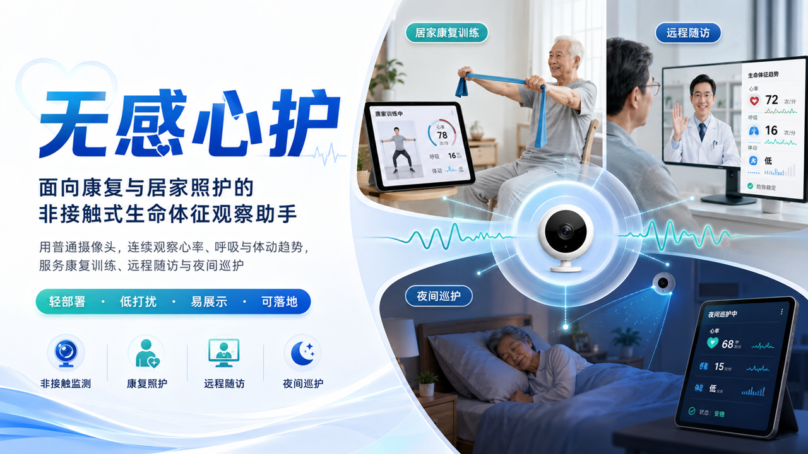

◉
稳定采集
本地服务持续接管摄像头，减少切页与后台运行造成的帧率波动。
LOCAL PULSE LAB · FACEPHYS
以普通摄像头捕捉面部微弱色彩变化，在本机完成 FacePhys 推理，让脉搏、信号质量与直播画面自然连接。
工程演示 · 非医疗用途 · 所有处理均在本机完成
LOCAL PULSE INSTRUMENT
允许摄像头后，系统会在本机追踪面部并评估采样条件。视频不上传，信号不留存，结果只为当下呈现。
CAPTURE STATUS
等待开始允许摄像头后，系统将在本机完成人脸定位与信号校准。
PULSE RATE · 脉率
PULSE WAVE · BVP
FacePhys 输出的实时脉搏波形PULSE SPECTRUM
有效脉率范围 · 42–180 BPMCAPTURE QUALITY
结果会受设备、光线与动作影响，仅用于交互演示。
COMPLETE WORKFLOW
本地服务负责连续采集与模型推理，直播控制台负责状态呈现、OBS 接入和互动管理，各环节清晰协作。
本地服务持续接管摄像头，减少切页与后台运行造成的帧率波动。
从人脸定位到 FacePhys 推理，持续生成脉率与信号质量。
条件不足时立即清空旧读数，让每个状态真实、可解释。
心率 Overlay、录制和高光片段，在 OBS 工作流中顺畅衔接。
PROJECT DECK · 8 PAGES
评委版演示文稿梳理了项目价值、技术闭环、核心场景与落地路径。可在网页内阅读，也可下载原始 PowerPoint。

PROJECT PRESENTATION
面向康复与居家照护的非接触式生命体征观察助手，从需求判断、产品方案到三类核心场景与 MVP 路径。
附件仅作项目说明；生命体征结果不用于医疗诊断或治疗决策。
若浏览器无法显示 PDF，请使用“单独打开 PDF”或下载原始 PPTX。
LOCAL-FIRST ARCHITECTURE
网站由 Vercel 提供静态资源，摄像头画面与模型推理始终留在设备本地。体验更直接，隐私边界也更清晰。